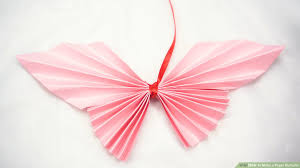

Intresting Facts About Camels!
- Camels have three sets of eyelids and two rows of eyelashes to keep sand out of their eyes.
- Camels have thick lips which let them forage for thorny plants other animals can’t eat.
- Camels can completely shut their nostrils during sandstorms.

Intresting Facts About Chameleon!
- CHAMELEONS VARY WILDLY IN TERMS OF SIZE.
- THEY MAINLY CHANGE COLOR IN ORDER TO COMMUNICATE OR REGULATE BODY TEMPERATURE.

Intresting Facts About Pigeons!
- Pigeons are renowned for their outstanding navigational abilities.
- Pigeons are highly sociable animals.
- Pigeons mate for life, and tend to raise two chicks at the same time.

Intresting Facts About Teddy Bear!
- The term bear-hug was first recorded in 1846.
- The Teddy Bears' Picnic song was originally called The Teddy Bear Two Step.
- The Oxford English Dictionary dates the first use of the term teddy bear to 1906.

Intresting Facts About Panda!
- Giant pandas are good at climbing trees and can also swim
- Pandas are "lazy" — eating and sleeping make their day
- An adult can eat 12–38 kilos of bamboo per day!

Intresting Facts About Cicada!
- Cicadas can survive a huge fall as babies, or nymphs.
- Most have red-orange eyes
- The loud whirring or buzzing sound you hear is an all-male cicada chorus.

Intresting Facts About Butterfly!
- Butterflies Taste With Their Feet.
- Butterflies Live on an All-Liquid Diet.
- Butterflies Often Live Just a Few Weeks.

Intresting Facts About Frog!
- One gram of the toxin produced by the skin of the golden poison dart frog could kill 100,000 people.
- There is a frog in Indonesia that has no lungs – it breathes entirely through its skin.